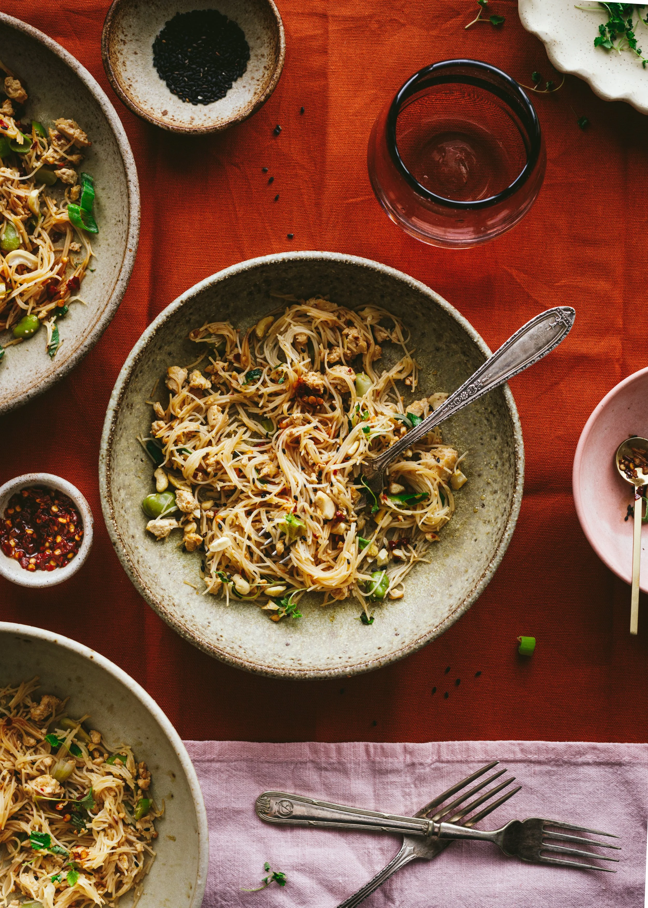

High Protein Tofu Noodles recipe
Back to homepage
Ingredients:
- Main Ingredients:
- 2 spring onions, chopped
- 50g cooked broad beans, peas or edamame beans
- 140g firm tofu, crumbled
- 1 tbs + 1 tsp tamari sauce
- 1 tsp of vegetable oil for frying
- A handful of spinach or spring greens, roughly chopped (optional)
- 65g rice noodles
- Water for boiling
- For the Noodle Sauce:
- 3 tbs teriyaki sauce
- 1/2 tsp mirin
- 1 tsp sesame oil
- To Finish Off (Optional):
- 2 tbs of sesame seeds
- A handful of crushed peanuts (optional)
- 1–2 tbs chilli flakes or chopped chillis, or more to taste (optional)

Recipe:
- Chop your spring onions and set aside.
- Select and weigh your preferred legume and set aside. If you're using edamame or broad beans, make sure the shells/skins are removed. Including these will give your noodle dish a protein boost!
- Press your tofu to remove the surplus liquid, then crumble it up so it resembles the texture of scrambled egg. You can do this by hand or by using a fork. Mix your tofu with your tamari sauce.
- Place a non-stick frying pan over a medium high heat. Add your vegetable oil and then the marinated tofu. Pan fry quickly until it just starts to brown. Set the frying pan with the tofu aside.
- Bring a pot of water to boil. Once the water is piping hot, add the noodles and cook for no more than 1 minute (longer if you're using egg noodles or thicker noodles — refer to the package for instructions, but remember to slightly undercook them as you'll be cooking them again shortly).
- Remove the noodles immediately and pour cold water over them to stop them from cooking further.
- In the non-stick frying pan with the tofu, add your cooked noodles, spring onions, beans (or peas), spinach (if using) and your noodle sauce. Mix until combined (no more than 1–2 minutes) until your noodles take on a light brown colour from the sauce. If needed, add another 1/2 tablespoon of teriyaki sauce. Watch not to stir too long as the noodles can go soggy.
- Serve immediately and top with sesame seeds, crushed nuts and chilli to taste!
All credits are from The Little Plantation